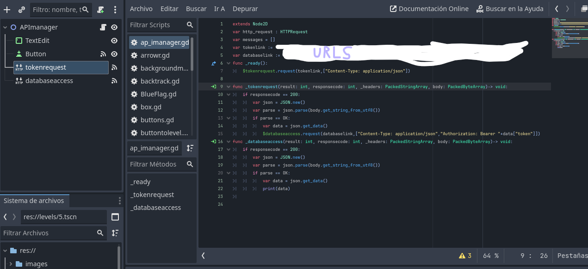

Go back to home
Video game development:
I have made a lot of different games in my free time using the Godot game engine, which are all posted on itch.io. They were all made for game competitions hosted online. Generally I choose Godot as a game engine, as I feel it is a lot more lightweight
and fast compared to more tradional ones like Unity or Unreal Engine [this is especially useful as my computer is not particularly powerful]. I also feel it is generally much easier to use and programme in.
My account under the name 'kazakking' currently has around 400 views.
Duo-Megethos (original)
This was my first game competition game. It is quite short and took 4 days to complete.
This was my first attempt to create a proper game, but I was still limited in my programming ability back then
thus it is quite buggy and rushed.
Visit the website with the game
Currently I am creating a revamped version of the game. This game will include a full story mode and a save system done through
the use of a JSON file and read/write instructions to keep track of levels beat. An online messaging system will also be included where players can leave a
message on a specific level which other players can read if they want to. This means I have used the website NEON to help provide
me with a free database and API that can be hosted outside of my computer. Although they give limited storage space, around 1 Gigabyte,
I think it is fine for my project as I don't except it to get super popular. To access the database, Two HTTP requests have to be sent from the game to the database made
in Neon. The first HTTP request fetches a 'token' from the projects authorization URL and that token is then included in the headers of the second HTTP
request which is towards the data API that handles read/write instructions to tables in the database. The only permisssions granted are to read the database and to
insert, as that is the maximum any one player will need to use the message system.
Example of http request code on godot project:

Mecon
This game is my most recent one. It is an exploration game but is very short. It took around 7 days.
I used godots features to include parallax effect in the background and also set up lighting for an immersive experience.
To help make the game more immersive, I included pitch variation to sound effects made by the robot and made
its hands react to the environment by having a seperate sprite where it 'pinches' the vines.
Godot helped set up most of the physics for the robot, but I used a script to apply an upwards force to the robot according to the direction
of the mouse when the player is guiding it upwards and to detect 'grabble' collisions.
My game ranked 11th out of 73 applicants for the game jam.
Visit the website with the game
Spinatus
This game I have spent the most time on, which is about ~20 days. It is a topdown shooter boss rush. For this game I had to think
a lot about how to apply modular code such that it can be applied for every boss including the player, examples of this might include a physical
body script that deals with collisions and appearance or a script that deals with keeping tracking of a health value along with setting up hit frames
and hit detections. I also had to set up different 'bullet types' that the bosses and players alike use.
Math projects:
Along with making video games, I also find math quite interesting and have done some experimenting with different
turtle graph fractals and have written a math research paper.
Modulo 2 Look-and-say sequence
I have written a math research paper on an interesting variation of the Look-and-say sequence that I have not been
able to find a lot of research on online. This paper involved the use of Matplotlib along with google colab and PIL to help
create visual graphs and patterns. This paper however is more of a general observation of the sequence rather than containing
any strict proofs. Nonetheless, it has helped improve my programming skills and research.
Download PDF for paper here